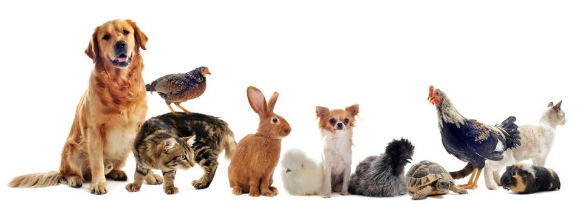

За Мисията Осиновяване
Навсякъде по света я има практиката да се осиновяват домашни любимци, вместо да се купуват и отглеждат скъпи породисти кучета и котки. PetsAdopters силно подкрепяме тази тенденция в модерния свят и се стремим да я превърнем в традиция и в България!
Благодарение на неуморните ни усилия и многобройните програми за кастрация и кампании за осиновявания, популацията на бездомни животни намаля в пъти през последните 10 години. Ще продължаваме да работим в тази посока! Бъдете част от това добро дело!